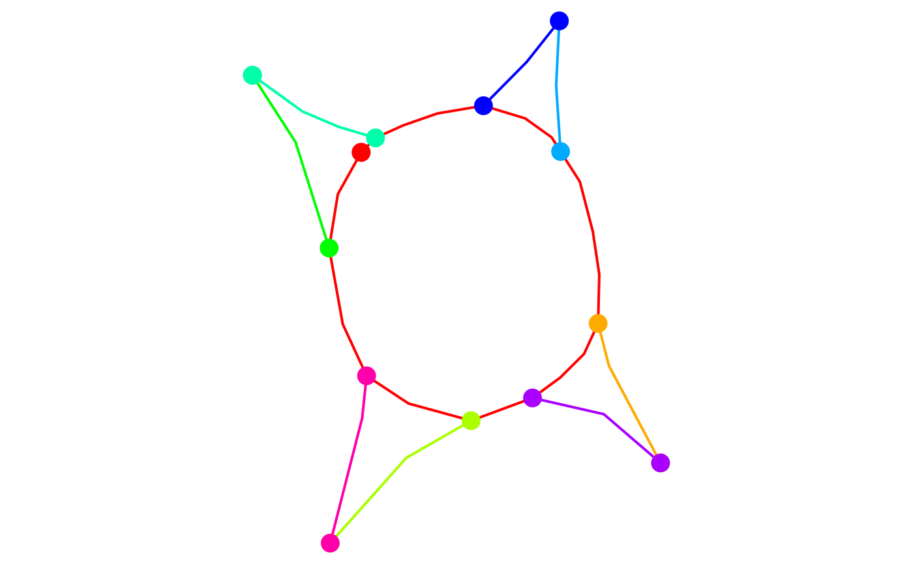
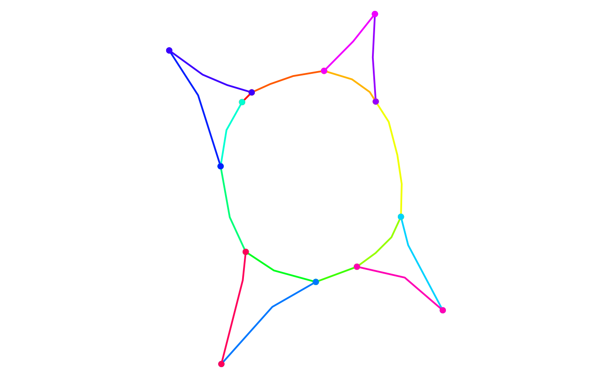
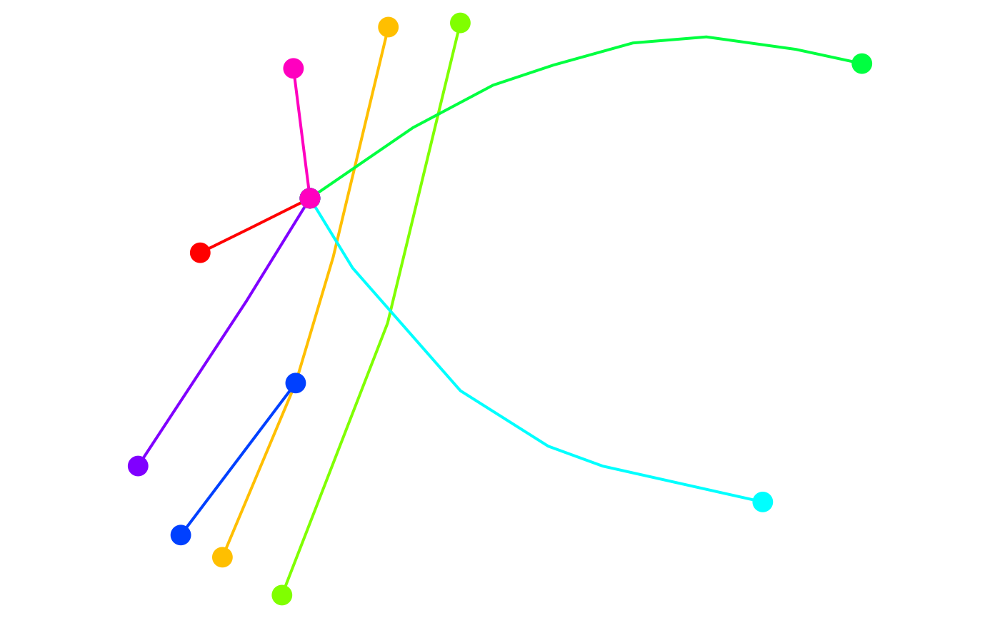
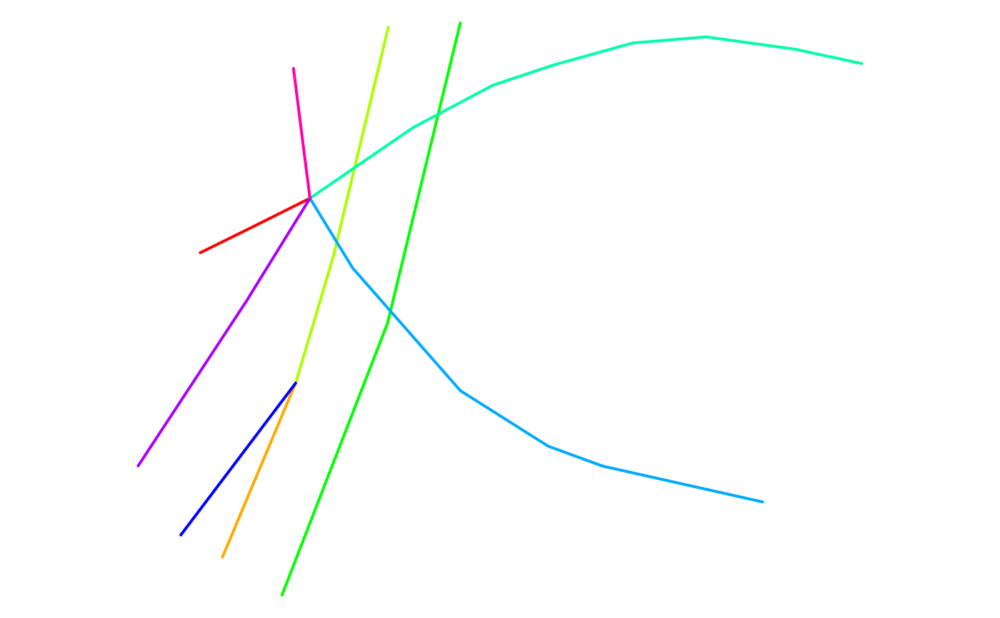
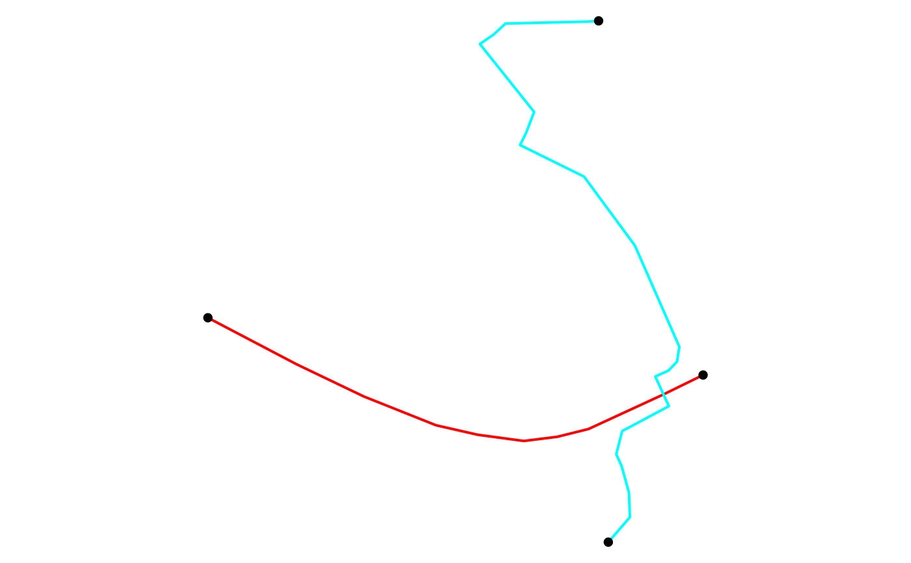
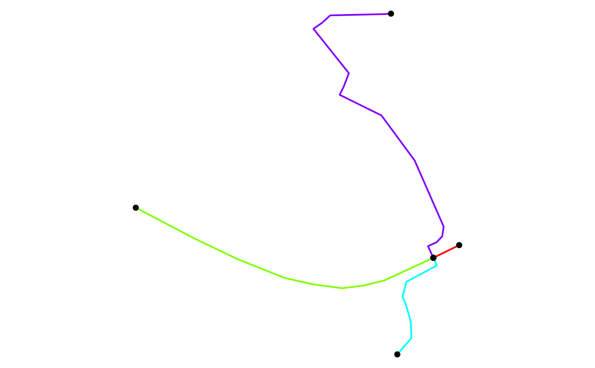

This function breaks up a LINESTRING geometry into multiple LINESTRING(s). It is used mainly for preserving routability of an object that is created using Open Street Map data. See details, stplanr/issues/282, and stplanr/issues/416.
Details
A LINESTRING geometry is broken-up when one of the two following conditions are met:
two or more LINESTRINGS share a POINT which is a boundary point for some LINESTRING(s), but not all of them (see the rnet_roundabout example);
two or more LINESTRINGS share a POINT which is not in the boundary of any LINESTRING (see the rnet_cycleway_intersection example).
The problem with the first example is that, according to algorithm behind
SpatialLinesNetwork(), two LINESTRINGS are connected if and only if they
share at least one point in their boundaries. The roads and the roundabout
are clearly connected in the "real" world but the corresponding LINESTRING
objects do not share two distinct boundary points. In fact, by Open Street
Map standards, a roundabout is represented as a closed and circular
LINESTRING, and this implies that the roundabout is not connected to the
other roads according to SpatialLinesNetwork() definition. By the same
reasoning, the roads in the second example are clearly connected in the
"real" world, but they do not share any point in their boundaries. This
function is used to solve this type of problem.
See also
Other rnet:
gsection(),
islines(),
overline(),
rnet_group()
Examples
library(sf)
def_par <- par(no.readonly = TRUE)
par(mar = rep(0, 4))
# Check the geometry of the roundabout example. The dots represent the
# boundary points of the LINESTRINGS. The "isolated" red point in the
# top-left is the boundary point of the roundabout, and it is not shared
# with any other street.
plot(st_geometry(rnet_roundabout), lwd = 2, col = rainbow(nrow(rnet_roundabout)))
boundary_points <- st_geometry(line2points(rnet_roundabout))
points_cols <- rep(rainbow(nrow(rnet_roundabout)), each = 2)
plot(boundary_points, pch = 16, add = TRUE, col = points_cols, cex = 2)

# Clean the roundabout example.
rnet_roundabout_clean <- rnet_breakup_vertices(rnet_roundabout)
plot(st_geometry(rnet_roundabout_clean), lwd = 2, col = rainbow(nrow(rnet_roundabout_clean)))
boundary_points <- st_geometry(line2points(rnet_roundabout_clean))
points_cols <- rep(rainbow(nrow(rnet_roundabout_clean)), each = 2)
plot(boundary_points, pch = 16, add = TRUE, col = points_cols)

# The roundabout is now routable since it was divided into multiple pieces
# (one for each colour), which, according to SpatialLinesNetwork() function,
# are connected.
# Check the geometry of the overpasses example. This example is used to test
# that this function does not create any spurious intersection.
plot(st_geometry(rnet_overpass), lwd = 2, col = rainbow(nrow(rnet_overpass)))
boundary_points <- st_geometry(line2points(rnet_overpass))
points_cols <- rep(rainbow(nrow(rnet_overpass)), each = 2)
plot(boundary_points, pch = 16, add = TRUE, col = points_cols, cex = 2)

# At the moment the network is not routable since one of the underpasses is
# not connected to the other streets.
# Check interactively.
# mapview::mapview(rnet_overpass)
# Clean the network. It should not create any spurious intersection between
# roads located at different heights.
rnet_overpass_clean <- rnet_breakup_vertices(rnet_overpass)
plot(st_geometry(rnet_overpass_clean), lwd = 2, col = rainbow(nrow(rnet_overpass_clean)))

# Check interactively.
# mapview::mapview(rnet_overpass)
# Check the geometry of the cycleway_intersection example. The black dots
# represent the boundary points and we can see that the two roads are not
# connected according to SpatialLinesNetwork() function.
plot(
rnet_cycleway_intersection$geometry,
lwd = 2,
col = rainbow(nrow(rnet_cycleway_intersection)),
cex = 2
)
plot(st_geometry(line2points(rnet_cycleway_intersection)), pch = 16, add = TRUE)

# Check interactively
# mapview::mapview(rnet_overpass)
# Clean the rnet object and plot the result.
rnet_cycleway_intersection_clean <- rnet_breakup_vertices(rnet_cycleway_intersection)
plot(
rnet_cycleway_intersection_clean$geometry,
lwd = 2,
col = rainbow(nrow(rnet_cycleway_intersection_clean)),
cex = 2
)
plot(st_geometry(line2points(rnet_cycleway_intersection_clean)), pch = 16, add = TRUE)

par(def_par)